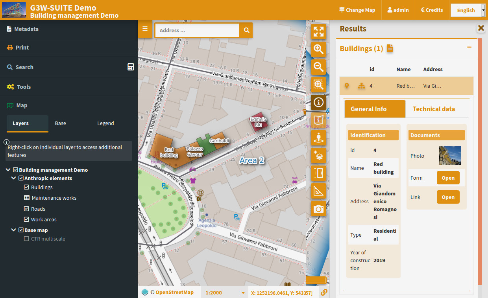

Pubblicazione e gestione WebGIS
Client cartografico e pannello admin integrati per progetti multiutente, workflow di editing e gestione permessi.
Soluzione open source per pubblicare e gestire servizi WebGIS direttamente dai tuoi progetti QGIS, in cloud o in house.

Nessun plugin da installare su QGIS: carica il file .qgs o .qgz e il servizio WebGIS è subito disponibile.
Crea il tuo progetto cartografico utilizzando i tuoi dati geografici
Caratterizza il progetto definendo struttura del progetto, join e relazioni 1:N, form e widget di editing, grafici interattivi (DataPlotly), layout di stampa e qualsiasi altro aspetto grafico e funzionale
Carica ed aggiorna i tuoi dati nel formato che preferisci (SpatiaLite, GeoPackage, Shapefile, Virtual layer)
Utilizza dati su GeoDatabase PostGreSQL/PostGis, Oracle Spatial e MSSQL
Accedi al tuo portale web dedicato per pubblicare i tuoi progetti come servizi WebGis
Gestisci autonomamente i tuoi progetti definendo utenti, permessi e vincoli di editing, grafici interattivi, metodi di ricerca e attivando le funzionalità più utili per il tuo gestionale



Pubblica un progetto QGIS come WebGIS mantenendo stili, simboli, form e layout di stampa, senza riconfigurare il progetto.
Dal pannello admin gestisci utenti, ruoli e permessi per singolo progetto, anche in contesti con più gruppi di lavoro.
L'editing web supporta attività collaborative e raccolta dati, anche in mobilità e in scenari offline.
Dalla pianificazione territoriale alla gestione reti, con progetti attivi in contesti operativi diversi.
Pubblicazione WebGIS, interoperabilità per la PA e analisi geografica avanzata: tre percorsi in base alle esigenze del progetto.
Client cartografico e pannello admin integrati per progetti multiutente, workflow di editing e gestione permessi.
Supporta scenari di transizione digitale con integrazioni dedicate e flussi PDND.
Esegui modelli QGIS Processing direttamente dal client web per integrare l'analisi nei flussi operativi.
Raccolta dati sul campo e pubblicazione WebGIS in un flusso unico, dal rilievo alla condivisione.
Scopri le soluzioniUna community attiva mantiene G3W-SUITE stabile, aggiornata e in continua evoluzione.